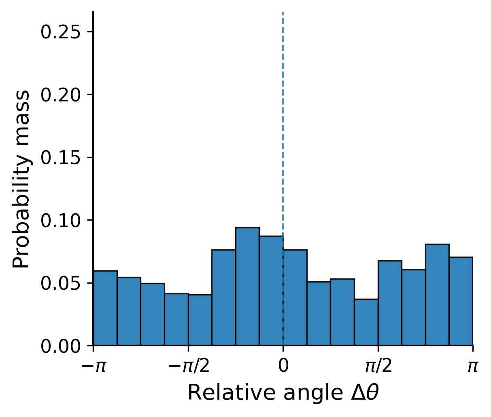
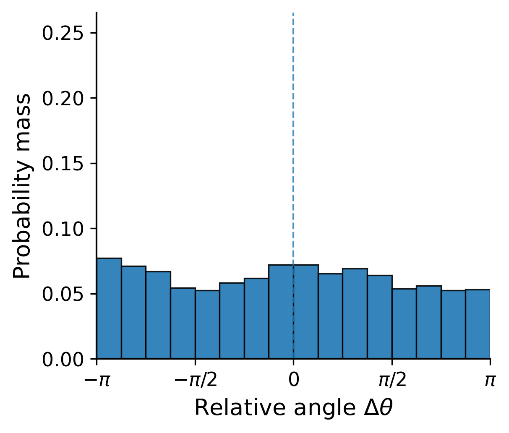
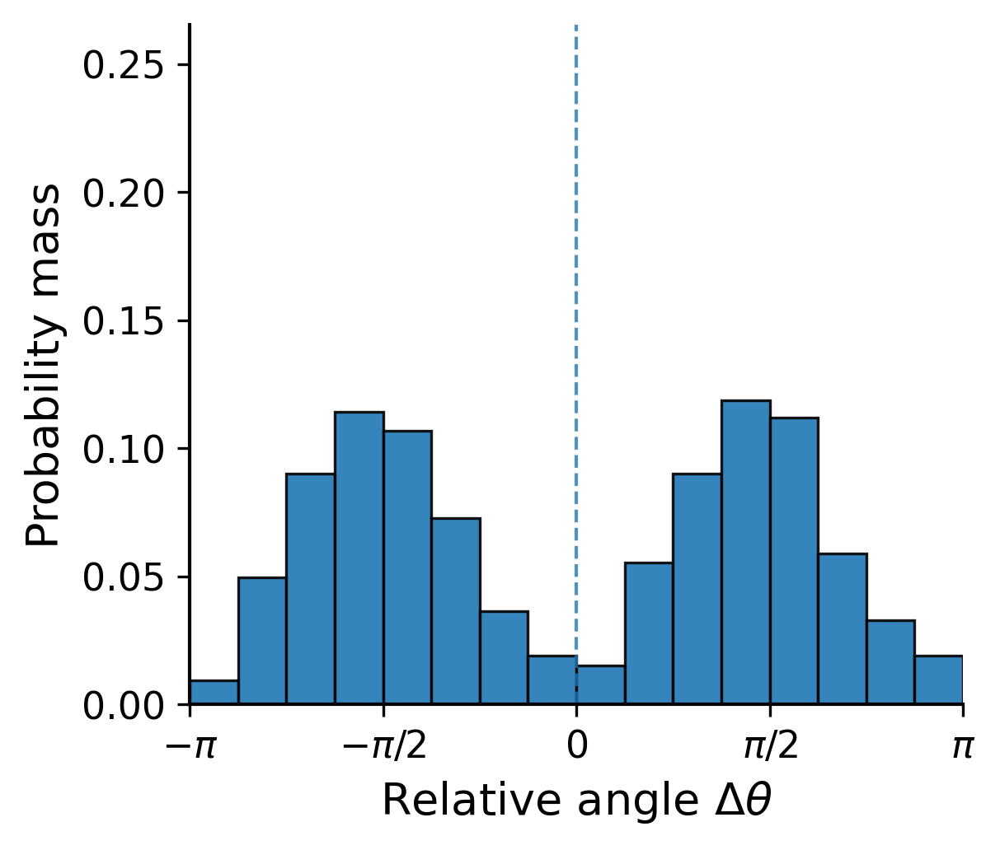
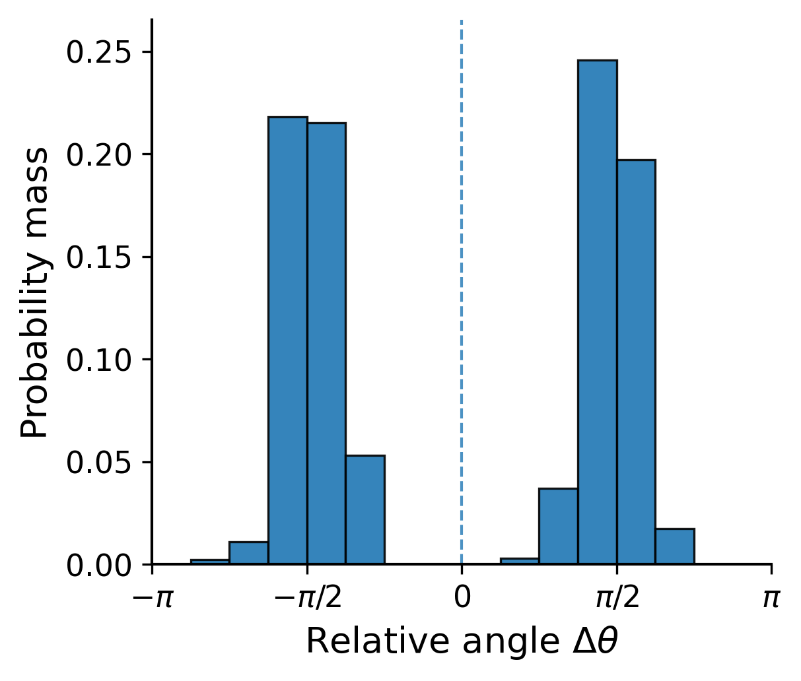
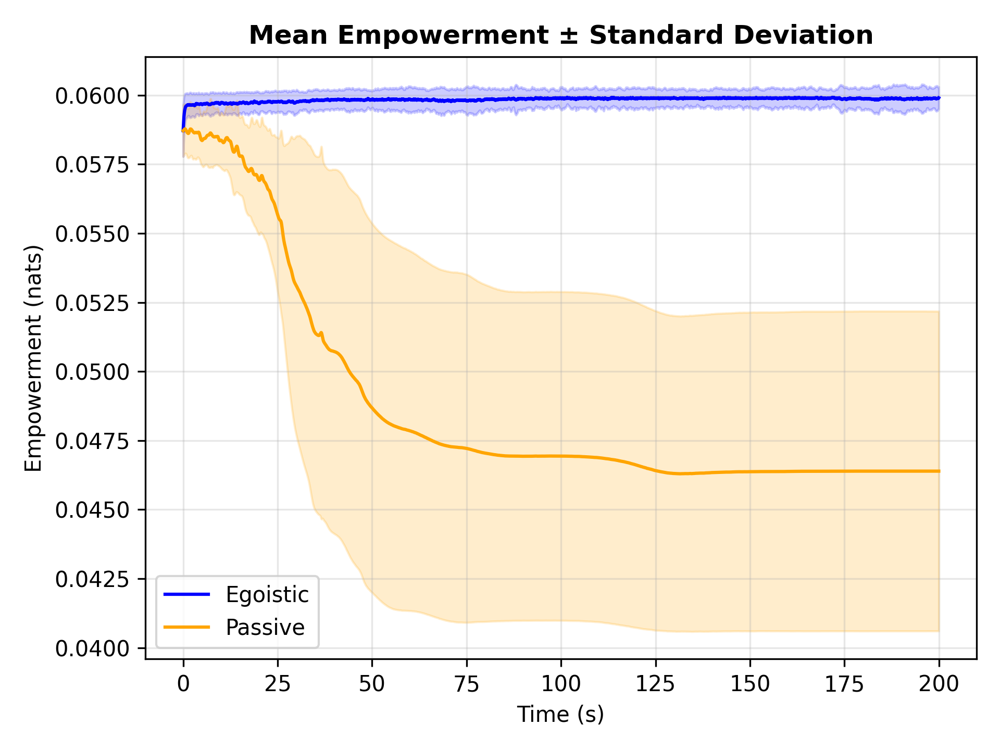
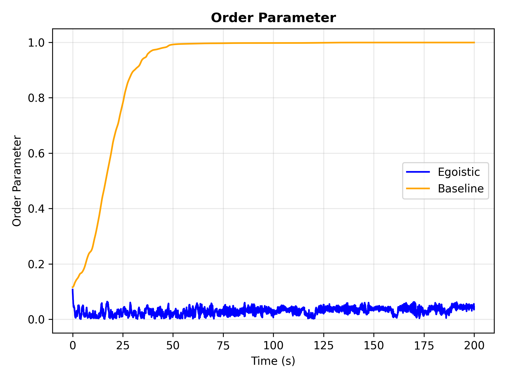

Results: Vicsek Flock
A flock of N = 125 agents, each controlling its angular acceleration. Under passive Vicsek dynamics the flock converges to a single heading. Under egoistic empowerment the flock self-organizes into two opposing directional bands.








Temporal evolution. Top row: spatial configuration (dot = agent, trail = recent path, color = heading angle). Bottom row: heading-angle distribution relative to flock average. The population transitions from random initial headings through filamentary formations into a stable bimodal band configuration.

Average flock empowerment over time. Egoistic agents maintain high empowerment; baseline dynamics cause a steady decline.

Flock order parameter over time. Baseline dynamics drive full alignment; egoistic empowerment suppresses consensus.